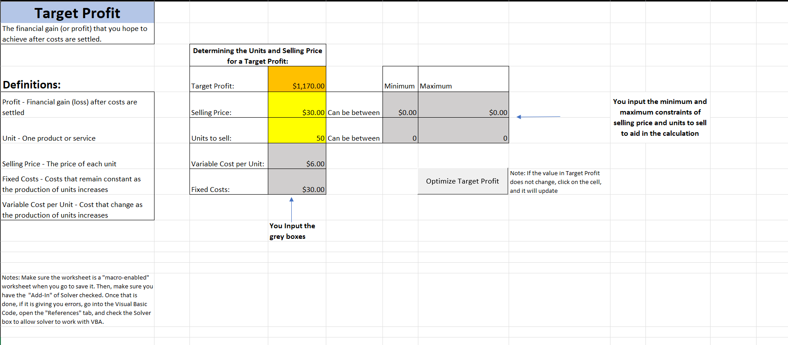

If you've been searching for tech solutions to your day-to-day problems, you've come to the
right
spot!
At our Etsy shop, we specialize in crafting innovative Excel templates designed to simplify and
streamline your daily tasks. Whether you're grappling with accounting challenges, intricate computations,
optimization puzzles, or seeking to automate repetitive processes, our meticulously crafted templates are here
to empower you. Our goal is to provide practical solutions that enhance efficiency and proficiency in various
aspects of your personal or professional life. Discover the ease and convenience of our templates, each
meticulously designed to address specific needs and challenges. Elevate your productivity with our
user-friendly, expertly engineered Excel solutions. Browse our collection and unlock the potential to conquer
your daily hurdles effortlessly. Welcome to a world where Excel meets ingenuity! Resume
Current Listings:
Excel Profit Optimization Worksheet
Tired of calculating your break even points, target profits, and contribution margins by
hand?
Try these three spreadsheets that allow you to understand how much of a product to make, how much to sell a
product or service for, how much profit you will need to make, and will calculate your contribution margin. As
you input values into the cells, the worksheet will do the work for you! Here are some of the reasons why to use
this Template:
Contribution Margin
The contribution margin is a key financial metric that plays a crucial role in business decision-making.
It is particularly useful for assessing the profitability of individual products or services and making
informed choices in various aspects of business operations.
Target Profit
Understanding target profit is essential for making informed business decisions, as it provides a
clear financial goal and helps guide strategic planning.
Break-even Point
Understanding the break-even point is critical for businesses as it provides valuable insights into
financial stability, risk management, and strategic decision-making.
Example of Target Profit

Are There Enough Hours in Your Day?
This excel worksheet allows you to plug in the hours that you will spend today and figure
out if you will have enough time for everything. A pie chart will also display the way that you day separates
after the values are entered. ENJOY! Here are some of the reasons why to use this Template:
Increased Productivity
Effective time management helps you prioritize tasks, focus on what's important, and complete work
efficiently. This leads to increased productivity as you can accomplish more in less time.
Reduced Stress
Proper time allocation reduces the feeling of being overwhelmed. When you have a clear plan for the
day and allocate time appropriately, it can alleviate stress and create a sense of control over your
responsibilities.
Improved Work-Life Balance
Understanding the break-even point is critical for businesses as it provides valuable insights into
financial stability, risk management, and strategic decision-making. Knowing how to allocate your time
allows
you to balance work, personal, and leisure activities. Achieving a better work-life balance is essential
for overall well-being and satisfaction.
More Information on Time Management
See our interactions:
Trends We've Seen This Month
Throughout this month, our Etsy page has experienced a steady increase in interactions,
primarily in the form of visits. The graph indicates a slow upward trend, showcasing growing interest in our
offerings. However, despite the heightened engagement, it's notable that there haven't been any material
purchases from our Excel spreadsheet Etsy page during this period. Understanding the dynamics of visitor
behavior and identifying potential factors influencing conversion rates will be crucial moving forward. This
insight allows us to strategize and optimize our Etsy presence, ensuring that the elevated interest
translates into meaningful transactions in the upcoming days and beyond.
Explore Unique Creations at Our Etsy Store!
Discover a world of creativity and craftsmanship at our Etsy store! From technology treasures to
one-of-a-kind designs, our collection is filled with love and passion. We invite you to browse through our
curated items, each telling its own story. Your support means the world to us, and we want to make your shopping
experience exceptional.
Have a specific idea in mind or a suggestion for a new product or template? We'd love to hear
from you! Drop us an email at alexpaul.vision@gmail.com and share your thoughts. Your feedback is
invaluable,
and we're always excited to bring your ideas to life.
Thank you for being a part of our creative journey. Happy shopping!